的“倒数”可能是
、
的“倒数”可能是
、按照我在引言中给出的广义定义 ，在有记载的历史中，代数很早就开始了从陈述式算术到疑问式算术的思维转变。我们已知的最古老的包含数学内容的书面文字记载，实际上包含了一些可被称为代数的内容。这些文字记载可以追溯到公元前二千年的上半叶，距今约 37 或 38 个世纪 1 ，它们是由生活在美索不达米亚和古埃及的人们书写的。
1 美索不达米亚早期历史的年代测定还没有定论。在撰写本书时，我经常参考“中间年表”，这也是我用的年表。此外，还有低年表、超低年表和高年表。“中间年表”中标注于公元前 2000 年的事件在高年表中的时间可能是公元前 2056 年，在低年表中的时间可能是公元前 1936 年，在超低年表中的时间可能是公元前 1911 年。专业的亚述学家因争论这些问题甚至产生了友谊或婚姻的破裂。我对此没有强烈的意见，这个时期的确切年代对我的叙述并不重要。出现在 1950 年之前的大部分资料中的更早的日期在今天看来都是不可确信的。
对现代人来说，那个世界似乎遥不可及。公元前 1800 年距恺撒大帝时代的时间跨度与恺撒大帝距我们现在这个时代的时间跨度一样久远。除了少数专家之外，关于那个时代、那些地域的广泛传播的知识只有《圣经·创世纪》中支离破碎且有争议的记载，所有受过良好训导的西方一神论宗教信徒们都非常清楚这些内容。这是亚伯拉罕和以撒、雅各和约瑟、吾珥和哈兰、所多玛和蛾摩拉的世界。彼时的西方文明包括整个新月沃地，这片连绵不断的肥沃土地从波斯湾向西北延伸至底格里斯河和幼发拉底河平原，横跨叙利亚高原，然后向下穿过巴勒斯坦到达尼罗河三角洲和埃及（图 1-1）。这片地区的人们曾彼此相知。新月沃地周边常年有交通往来，从位于幼发拉底河下游的吾珥到位于尼罗河中游的底比斯之间都有交通往来。亚伯拉罕也许正是沿着这些很多人走过的路，从吾珥到巴勒斯坦，最后长途跋涉到埃及。
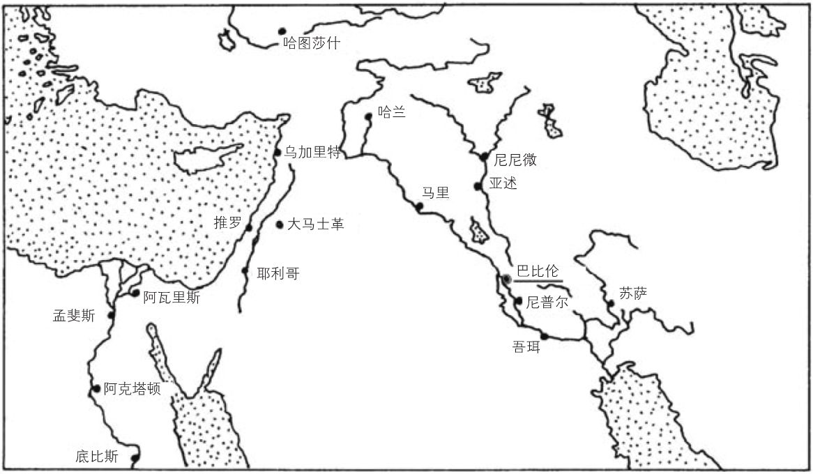
图 1-1 新月沃地
从政治角度讲，新月沃地的三个主要区域看起来差异非常大。巴勒斯坦是一处偏僻的地方，但是它是通往别处的交通要道。当时的人们认为它属于古埃及的势力范围。古埃及是一个种族统一的国家，而且在其边界没有能对它形成严重威胁的族群。这个国家在遭受我后面要讲述的第一次外来侵略之前已有一千五百年的历史，比如今的英国的历史还要悠久。在自认为安全的环境下，古埃及人很早就形成了一种类似于中国古代封建统治的思维方式，建立了中央集权的君主专制，由通过层层选拔的人才建立起来的庞大官僚系统统治着。早在大约公元前 2500 年到公元前 2350 年的第五王朝，就有近 2000 个官衔。正如罗伯特·维森在《帝国秩序》（The Imperial Order ）一书中所说的那样：“在这种奇妙的等级制度下，人与人都是不平等的。”
美索不达米亚却呈现出完全不同的景象。这里的种族关系更加复杂，最初是苏美尔人，随后依次是阿卡德人、埃兰人、亚摩利人、赫梯人、喀西特人、亚述人以及阿拉米人占据优势。古埃及式的官僚专制也曾在美索不达米亚占据一时的主导地位，当时一个强大的统治者可以掌控足够大的领土，但这些帝国都难以持续很长时间。其中最早也最重要的是萨尔贡大帝的阿卡德王朝，这个王朝从公元前 2340 年到公元前 2180 年统治了整个美索不达米亚 160 年，最后因高加索部落的袭击而瓦解。我在这里讲述的是公元前 18 世纪和公元前 17 世纪，那时萨尔贡的荣耀已经成为逐渐消退的记忆。然而，它却给这片地区留下了一种相对通用的语言：闪米特语族中的阿卡德语。苏美尔语一直存在于该地区的南方，显然它被认为是受教育的人熟知的一种高贵语言，颇像罗马人使用的希腊语或中世纪和近代欧洲早期使用的拉丁语。
然而，美索不达米亚通常处于一种百家争鸣的状态，这里的语言和文化有很多共同点，但没有统一。在这种环境下，美索不达米亚的创造力最为繁荣，可与黄金时代的希腊城邦、文艺复兴时期的意大利或 19 世纪的欧洲相媲美。统一是偶然而短暂的。这个时代无疑是“令人向往”的，也许，这就是创造力的价值。
※※※
在不同帝国统治美索不达米亚的各个时期中，最令人印象深刻的一个时期是公元前 1790 年到公元前 1600 年。那时的统一者是汉谟拉比，他于这个时期之初在幼发拉底河中游的巴比伦城邦掌权。汉谟拉比 2 是亚摩利人，说阿卡德方言。他统治了整个美索不达米亚，把巴比伦变成当时最伟大的城市。这就是第一巴比伦帝国（古巴比伦王国）。3
2 汉谟拉比（Hammurabi）的另一个常见拼写是“Hammurapi”。古英文文献使用的是“Khammurabi”“Ammurapi”和“Khammuram”。然而，认为汉谟拉比就是《圣经·创世记》14:1 中的暗拉非（Amraphel）的观点今天已不被认同。亚伯拉罕的时代是人们推测的，但是人们似乎认为他生活的年代早于汉谟拉比统治的时代。
3 西方传统更熟悉的是第二巴比伦帝国 。第二巴比伦帝国（新巴比伦王国）指的是尼布甲尼撒二世的帝国，当时犹太人被监禁，但以理也侍奉过这位君主，在伯沙撒王的盛宴期间，墙上出现的文字预示了第二巴比伦帝国将被波斯人攻陷。这一切发生在汉谟拉比时代的一千年后，不属于我们讲述的这部分故事。
古巴比伦王国是一个有文字记载的伟大文明。他们的著作都是用楔形文字写成的。也就是说，写出的文字是用楔形笔压在湿黏土上形成的图案。这些被刻上字的泥板和圆柱桶经过烧制而得以长久保存。苏美尔人在很久之前就发明了楔形文字，在萨尔贡时代引入阿卡德。到了汉谟拉比时代，这种书写方法已经演变成包含 600 多个符号的书写体系，每一个符号代表一个阿卡德语音节。
《汉谟拉比法典》是汉谟拉比在他的帝国强制执行的伟大法律体系。下面是取自《汉谟拉比法典》序言中的用阿卡德楔形文字书写的语句（图 1-2）。
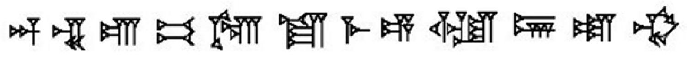
图 1-2 楔形文字
这句话的发音类似于“En-lil be-el sa-me-e u er-sce-tim”，意思是“恩利尔，宇宙和地球之主”。从单词“be-el”可以看出，这是一种闪米特语，它与英文“Beelzebub”（别西卜，神话中引起疾病的恶魔）的前缀有关，这让我们想起了希伯来文“Ba'al Zebhubh”，意思是“蝇王”。
实际上，楔形文字在古巴比伦王国消亡之后仍然沿用了很长时间，一直到公元前 2 世纪。古代世界的很多语言使用的都是楔形文字。伊朗的某些遗迹上有楔形文字铭文，属于公元前 500 年左右居鲁士大帝的王朝。早在 15 世纪，这些铭文就被当时的欧洲旅行家注意到了。自 18 世纪晚期开始，欧洲学者开始尝试破译这些铭文 4 。到 19 世纪 40 年代，人们对楔形文字的理解已经有了良好的基础。
4 这里出现的几个关键人物是丹麦人卡斯滕·尼布尔（1733—1815）、德国人格奥尔格·弗里德里希·格罗特芬德（1775—1853）和英国人亨利·罗林森（1810—1895）。顺便说一下，格罗特芬德来自德国汉诺威，后来被汉诺威王室的哥廷根大学聘请，从事破译楔形文字的工作。哥廷根大学后来成为闻名世界的数学研究中心。
大约就在同一时期，很多考古学家开始发掘美索不达米亚的古代遗迹，例如法国人保罗·埃米尔·博塔（1802—1870）和英国人奥斯丁·亨利·莱亚德（1817—1894）等。他们发现了大量经过烧制的刻有楔形文字的泥板。这类考古工作一直持续到今天，现在全世界各地的私人或公共收藏总计有超过 50 万块这样的泥板，它们所属的时代大约在公元前 3350 年到公元前 1 世纪。这些泥板大都属于汉谟拉比时代，因此形容词“巴比伦的”经常用在与楔形文字有关的任何事情上，尽管古巴比伦王国的统治时期还不足两个世纪，而使用楔形文字的历史却长达 30 个世纪。
※※※
至少从 19 世纪 60 年代起，人们就已经知道一些楔形文字泥板中记录了数字信息。首先，被破译的这类信息都出自人们很容易想到的具有活跃商业传统的组织有序的行政部门，如库存、账目等资料，此外还有大量的历法资料。古巴比伦人掌握了深奥的历法和广博的天文学知识。
然而，到了 20 世纪初，出现了很多明显与数学有关的泥板，但这些内容既与计时无关，也与记账无关。直到 1929 年，奥托·诺伊格鲍尔（1899—1990）才开始注意它们并进行相关研究。
诺伊格鲍尔是奥地利人，出生于 1899 年。他参加过第一次世界大战，结果与同胞路德维希·维特根斯坦（1889—1951）一同被抓入意大利战俘营。第一次世界大战结束后，他首先成为一名物理学家，后来又转向数学研究，进入哥廷根大学，跟随 20 世纪初最伟大的一些数学家理查德·柯朗（1888—1972）、埃德蒙·兰道（1877—1938）和埃米·诺特（1882—1935）学习。到了 20 世纪 20 年代中期，诺伊格鲍尔的兴趣开始转向古代数学。他对古埃及进行了研究，并发表了一篇关于莱茵德纸草书的论文。稍后我将详细介绍莱茵德纸草书。随后，他又将关注点转向古巴比伦，学习阿卡德语，着手研究汉谟拉比时代的泥板。研究成果就是他在 1935 年到 1937 年出版的三卷巨著《楔形文字数学文本》（Mathematische Keilschrift - Texte ，德文“keilschrift”的意思是“楔形文字”），古巴比伦数学的巨大财富首次在这部著作中得到展示。
纳粹上台后，诺伊格鲍尔离开了德国。虽然他不是犹太人，但他在政治上是一名自由主义者。在哥廷根大学数学研究所清除犹太人后，诺伊格鲍尔被任命为该研究所的所长。康斯坦丝·里德（1918—2010）在《希尔伯特》一书中称诺伊格鲍尔“担任此要职只有一天，因为他在校长办公室中激烈争辩，拒绝在所谓的忠诚宣言上签字”。诺伊格鲍尔首先去了丹麦，然后到了美国，他在美国接触到了新的楔形文字泥板藏品。1945 年，他和美国亚述学家亚伯拉罕·萨克斯（1915—1983）合作，出版了《楔形文字数学文献》（Mathematical Cuneiform Texts ）。这本著作现在仍是关于古巴比伦数学的英文权威著作。当然，这方面的研究仍在继续，古巴比伦人的辉煌成就现在已经众所周知。特别是，我们现在知道他们掌握了一些可以被称为代数的技巧。
※※※
诺伊格鲍尔发现，汉谟拉比时代的数学文本有两种：“表格文本”和“问题文本”。表格文本就是乘法表、平方表和立方表等表格，以及一些更高级的列表，比如现存于美国哥伦比亚大学的“普林顿 322”泥板就列出了毕达哥拉斯三元组，即满足
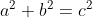
的三元组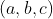
，根据毕达哥拉斯定理，这三个数对应于直角三角形的三条边。古巴比伦人迫切需要这样的表格，因为虽然他们书写数字的系统在当时很先进，却不能像我们熟悉的 10 个数字那样方便地进行计算。他们的数字体系是六十进制而不是十进制。例如，十进制数 37 表示 3 个 10 加上 7 个 1，而古巴比伦人的 37 表示 3 个 60 加上 7 个 1，相当于十进制数 187。因为缺少用来“占位”的 0，事情变得更加困难。因为今天的记法中有 0，所以我们可以区分 284、2804 和 208 004 等。
分数的书写方式就像我们表示小时、分钟和秒那样，这种方式其实是古巴比伦人的原创。例如 2.5 用这种表示就写成 2:30。古巴比伦人知道，在他们的体系下，2 的平方根大约是 1:24:51:10。这个数是 1-[24-(51-10÷60)÷60]÷60，它与 2 的平方根的精确值相差约一千万分之六。与整数一样，缺少占位数字 0 会产生歧义。
即使在表格文本中，代数计算的思维也很明显。比如，我们知道平方表可辅助进行乘法计算，公式
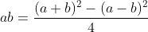
把乘法简化为减法（和一个简单的除法）。古巴比伦人知道这个公式，或者说他们知道其本质，只是不知道怎么用上面的办法表示成抽象的公式。他们把这个公式看成一个可以运用于特定数字的步骤，即我们今天所说的算法 。
※※※
这些表格文本非常有趣，但是，只有在问题文本中我们才能看到代数的真正开端。比如，其中有二次方程的解法，甚至还有一些特殊的三次方程的解法。当然，这些文本都不是用类似现代代数记号写成的，所有这些都写成涉及实际数字的文字问题。
为了让读者充分感受古巴比伦数学，我将用三种形式给出《楔形文字数学文献》中的一个问题，分别是楔形文字、文字翻译以及这个问题的现代表述。
图 1-3 展示的是这个问题的楔形文字。它书写在一块泥板的两面，图中是该泥板的正反面，这两面并排摆放。5
5 事实上，楔形文字不都那么难理解。了解用楔形文字记数的最佳简短指南是约翰·康威（1937—2020）和理查德·盖伊（1916—2020）合著的《数之书》。
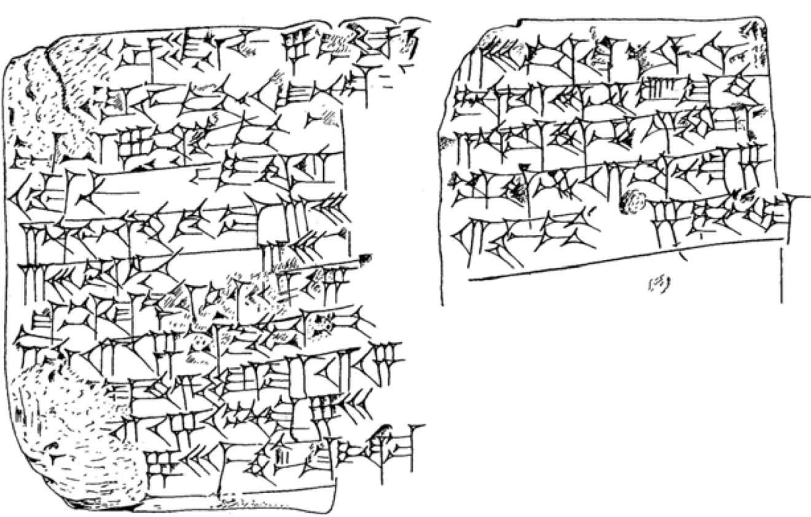
图 1-3 楔形文字的问题描述
诺伊格鲍尔和萨克斯将这块泥板的内容翻译如下：文字是阿卡德语，字母和数字是苏美尔语，括号里面的内容是原文不清楚的或根据理解补充的。
（左图的译文）
[igib]um 比 igum 大 7。6
问 [igum 和 ]igibum 是多少？
对你来说，平分 7，这是 igibum 超过 igum 的值，（其结果）为 3;30。
把 3;30 与 3;30 相乘，（得到的结果是）12;15。
对于得到的结果 12;15，
加上 [ 乘积 1,0]，（结果是）1,12;15。
1,12;15[ 的平方根 ] 是什么？（答案：）8;30。
记下 [8;30 和 ]8;30，这两个数相等，然后
6 “igum”和“igibum”是古巴比伦数学文献中表示互为倒数的两个数的专有术语。——译者注
（右图的译文）
从一个 8;30 中减去 3;30，
把这个数加到另一个（8;30）。
一个数是 12，另一个数是 5。
igibum 等于 12，igum 等于 5。
（注意：诺伊格鲍尔和萨克斯使用逗号把数的数位分隔开，使用分号分隔整数部分和小数部分。所以“1,12;15”表示
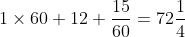
。）下面是用现代方法求解该问题的过程。
一个数比它的倒数大 7。注意，因为古巴比伦的数的进位制存在歧义，所以
的“倒数”可能是
、
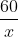
、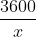
等。事实上，
的“倒数”可能是 60 的任何次幂除以
。但从原作者的求解过程可以看出，这里取的“倒数”应该是
。于是
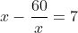
和它的“倒数”是多少？因为上面这个方程可以化简成
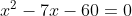
我们可以运用熟知的公式 7 得到
7
给不熟悉二次方程求根公式的读者介绍一下：二次方程  有两个解
有两个解
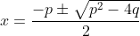
。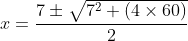
这给出了答案 或
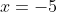
。古巴比伦人不知道负数，直到 3000 年后，负数才开始被普遍使用。所以他们关心的解只有 12，它的“倒数”（即 ）是 5。古巴比伦人的算法实际上并不能得出上面的二次方程 8 的两个解，而是等价于求
和它的“倒数”的一个略微不同的公式
8 本书中的“二次方程”“三次方程”“四次方程”“五次方程”等一般指一元方程。——译者注
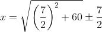
如果想对此吹毛求疵，你可以说，这表明严格来说他们没有解出二次方程。尽管如此，你也不得不承认这是青铜时代早期的数学中令人印象非常深刻的成果。
※※※
我再强调一次，汉谟拉比时代的古巴比伦人并没有真正的代数字母符号体系。这些都是文字问题，量用原始的编号系统来表示。对于使用“未知量”进行思考这个方向，他们仅仅向前迈了一两步，即在阿卡德语文献中用苏美尔语单词表示未知量，例如上面问题中的“igum”和“igibum”。（诺伊格鲍尔和萨克斯把“igum”和“igibum”都翻译成“倒数”。在其他地方，泥板上使用苏美尔语来表示矩形的“长”和“宽”。）这些算法不具有普适性，不同的文字问题使用了不同的算法。
由此产生了两个问题。第一，他们为什么要提出这些文字问题？第二，是谁首先解决了这些问题？
对于第一个问题，古巴比伦人并不打算告诉后人他们为什么要提出这些文字问题。比较可靠的猜测是，这些文字问题可能是一种检查计算的方式，计算可能涉及测量土地面积，而问题可能是求建造某种尺寸的沟渠时需要挖出的泥土量。当人们圈出一块长方形土地计算它的面积时，他们可以“反过来”通过某个二次方程的算法求出它的面积和周长来确认得到的结果是正确的。
对于第二个问题，汉谟拉比时代的泥板中出现的原始代数是非常成熟的。根据我们对远古时代知识进步速度的了解来看，这些技术一定酝酿了好几个世纪。是谁最先想出来的呢？我们无法知道这个问题的答案，但是这些问题泥板使用了苏美尔语，暗示了苏美尔人可能是其创始者（同现代数学使用希腊字母一样）。我们有汉谟拉比时代之前的文献，也就是三千年以前的资料，但它们都是算术文献。直到公元前 18 世纪和公元前 17 世纪，代数思想才开始出现。如果存在可以说明这些代数思想发展更早的“过渡”文献，那么，它们或者没有被保存下来，或者至今尚未被发现。
汉谟拉比时代的泥板也没有告诉我们任何关于作者的信息。我们知道大量古巴比伦人的数学成果，却不知道任何一位古巴比伦数学家。我们知道其名字的第一位可能是数学家的人生活在新月沃地的另一端。
※※※
正当汉谟拉比王朝在美索不达米亚的统治日益巩固的时候，古埃及正在遭受第一次外来入侵。这些侵略者在希腊语中被称为希克索斯（Hyksos），这个单词是埃及语“外来统治者”一词的讹误。这些外来者从巴勒斯坦开始入侵，他们没有采取突袭的方式，而是对它缓慢地进行吞并和殖民，大约在公元前 1720 年，希克索斯在尼罗河三角洲东部的阿瓦里斯建都。
在希克索斯王朝，有一位名叫阿姆士（约公元前 1680—前 1620）的人，他是我们现在知道名字的第一位与数学有一定联系的人。至于他是否是职业数学家尚无定论。我们是通过一份可追溯到公元前 1650 年左右（希克索斯王朝的早期）的纸草书知道他的。这份纸草书表明，阿姆士是一名抄写员，抄写的是一份写于第十二王朝（大约公元前 1990 ～前 1780 年）的资料。这是我们知道的源于希克索斯王朝的文献之一，希克索斯的统治者们非常崇拜当时的古埃及文明。或许阿姆士不懂数学，只是盲目地抄写他看到的文字。然而，这似乎不太可能。这份纸草书中的错误很少，那些存留的错误看起来更像计算错误（后面的计算用的是错误的数），而不是抄写错误。
这份资料通常被称为《莱茵德纸草书》，以纪念苏格兰人亨利·莱茵德（1833—1863）。莱茵德患有肺结核，于 1858 年冬天到埃及度假休养，其间在卢克索城买下了这份纸草书。在他去世五年后，大英博物馆得到了这份纸草书。现在，人们认为应该以这份纸草书的作者的名字为其命名，而不是以购买者的名字为其命名，因此，人们现在通常也称之为《阿姆士纸草书》。
虽然这是数学中令人兴奋的伟大发现，但是在我所讨论的意义中，阿姆士纸草书仅包含了代数思维最浅显的痕迹。下面是这份纸草书中的问题 24，它是一个代数问题：“一个量加上自身的四分之一等于 15。”我们用现代记法写出来，就是已知
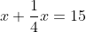
求未知数
。阿姆士使用了试错法求解，这份纸草书中几乎没有出现古巴比伦风格的系统化算法。
※※※
詹姆士·纽曼（1907—1966）在《数学的世界》中写道：“关于古埃及数学的水平在学习古代科学的学生中，存在着较大的不同认识。”9 这些不同的观点现在依然存在。然而，在阅读了古巴比伦和古埃及的代表性文献之后，我不明白为什么还有人主张，这两个公元前 1750 年左右分别在新月沃地两端繁荣起来的文明古国在数学发展水平上是相当的。尽管它们的数学都是算术风格，而且也没有证据表明他们拥有任何抽象能力，但是古巴比伦的问题显然比古埃及的问题更深刻、更精妙。（顺便说一下，这也是诺伊格鲍尔的观点。）
9 译文引自李文林等译《数学的世界Ⅱ》第 109 页。——译者注
这些古代人仅使用最原始的数字书写方法就取得了如此辉煌的成就，这真是了不起的事情。但也许更令人惊讶的是，在随后的几个世纪里，他们几乎没有取得新的数学进展。